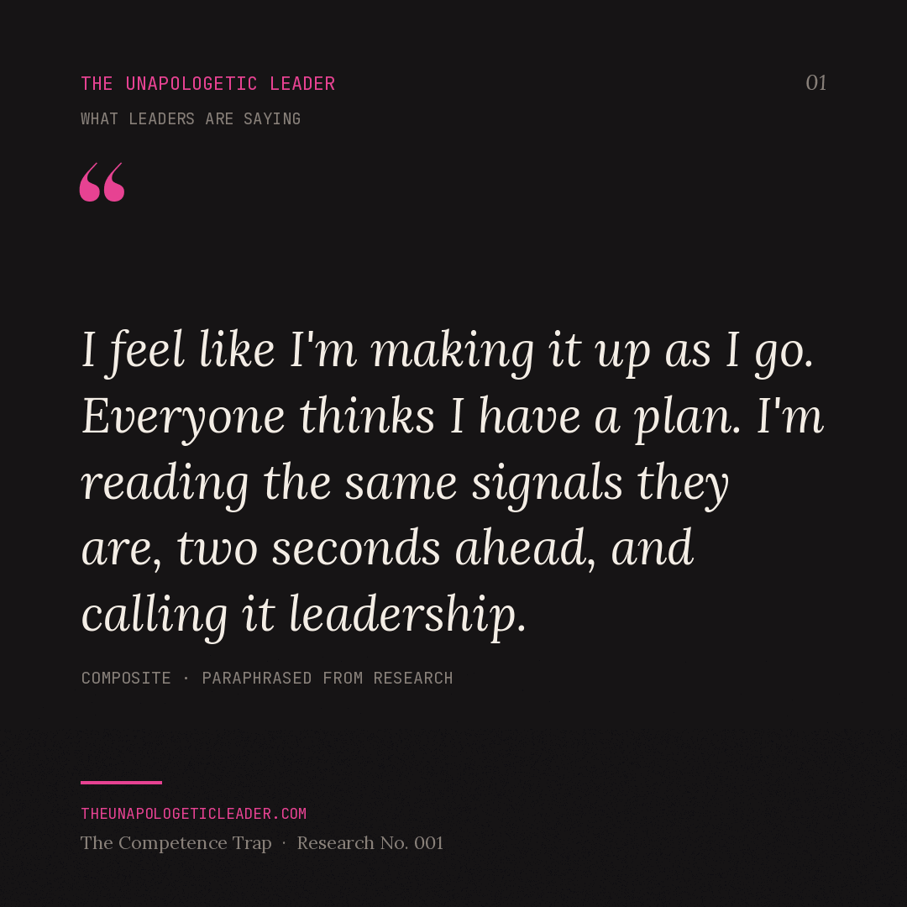
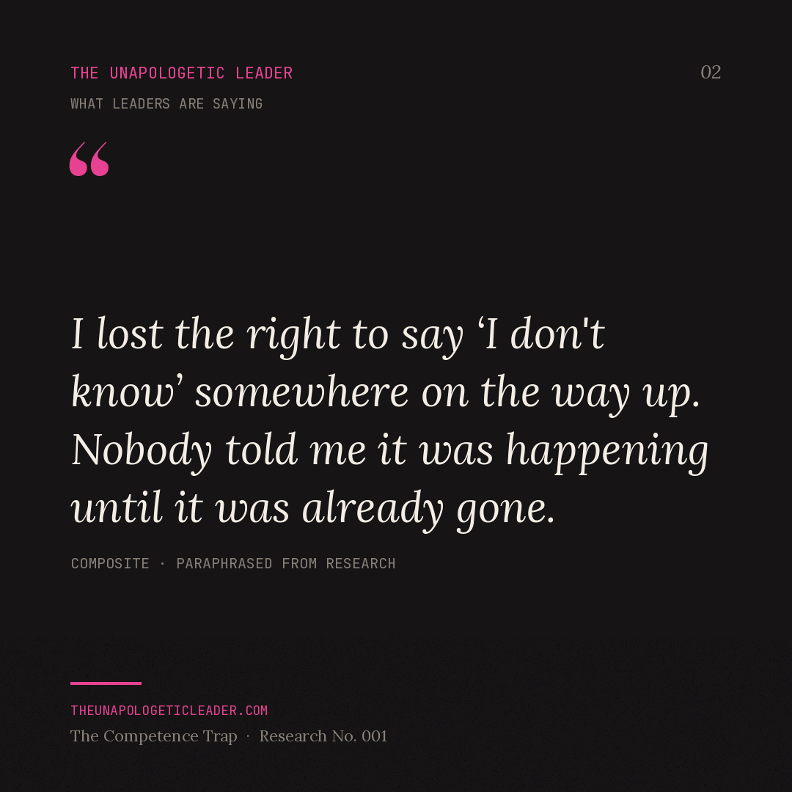
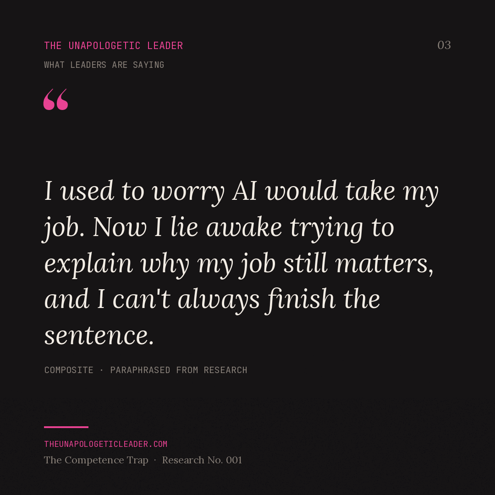

I have been transcribing my hand-written journals, over 800,000 words of my actual words, years of data on my own lived experiences. The ink changes color every few lines, the way it does when you keep grabbing whatever pen is closest because the thought won't wait. One line near the bottom of a page, in green, almost thrown away: I think I'm doing everything anyone can.
I wrote that on a good day.
For years, I thought the work was holding it all. The household, a team, the kids, the grief I didn't have time to set down, the standards nobody set as high as I did. And I was great at it, and I enjoyed so much of it. That was the trap. When you're good at carrying, people stop asking whether they should be. They hand you more, and you take it because that's what you know how to do, and it feels good to be needed.
I'm not writing this from the far side of it. I studied this because I lived it, and searched for data to see whether it was just me.
Last week, I had two series of reports open on the same screen. One was about marketing leaders. The people who run the room, hit the number, and fall apart in the parking lot afterward. The other was about small business owners. The people who built something real with their hands and now can't sleep because the phone stopped ringing and they don't know why. Different language. Different research entirely.
About forty minutes in, I realized I was reading the same story twice. Two separate problems that describe the same trap, in the same words, from opposite ends of the same hallway.
Competence is the trap
When you're good at the thing, because you're good at it, you get handed more of it. Because you handle more, you are trusted with even more. The reward for carrying weight is more weight. It keeps going, quietly, without anybody consciously choosing it, until one day you look up and you're not just doing the work anymore. You're the thing the work is resting on. You became load-bearing.
The phrase comes from engineering leadership, where Will Larson describes how organizations come to depend on specific "load-bearing" people and warns that a healthy org rotates that dependency instead of reinforcing it. Most orgs don't rotate it. They find the person who can hold it, and they let them.
The worst part of being load-bearing is that at some point you can't step back without something collapsing. So you don't. You continue to carry it. You perform certainties you don't feel and tell yourself this is what capable looks like.
The data follows in the same direction. In Marketing Week's 2026 Career and Salary Survey of 2,350 marketers, 84.9% said they'd experienced imposter syndrome, and for half of them the feeling had intensified in the past year. Nearly two-thirds, 65.3%, said they'd felt overwhelmed. These aren't junior people. Imposter syndrome ran highest among marketers in the thick of their careers, the 26-to-45 band, the people actually carrying the load. And the tell: more than four in ten, 42.5%, said they wouldn't tell their manager how they were feeling. The most capable people in the building are the ones least able to say they're struggling, because admitting the weight feels like admitting they were never strong enough to hold it.
The fear has changed too. It used to be "AI is going to take my job." Now it's quieter and arguably worse: "AI just proved I can't explain why my job still matters." The coaches working with these leaders describe people in genuine crisis, a kind of self-doubt that doesn't feel like doubt. It feels like math.
What it feels like at 11 p.m.
The lines below are composites, paraphrased and anonymized from the patterns running through anonymous forums, coaching observations, and survey free-text in the leadership research. No single real person said these exact words. Hundreds said some version.



What leaders are saying · composite, paraphrased from research
The thread underneath all of it isn't laziness or weakness. It's the opposite. These are the people who deliver, which is exactly why the weight keeps landing on them. Competence didn't protect them from the load. Competence is what selected them for it.
The same trap, one business lane over
A business owner is usually the most capable unit in their own system. Everything routes through them: sales, hiring, the thing that broke this morning, the upset customer, the decision nobody else can make. They become load-bearing for their company, the same way the marketing leader becomes load-bearing for the org. And then if growth stalls, they don't always panic and act. They freeze.
The Federal Reserve's 2025 Small Business Credit Survey, covering more than 6,500 employer firms, found that "reaching customers and growing sales" was the single most common operational challenge owners reported, and that their expectations for future revenue growth had dropped to the lowest level since 2020. Demand didn't vanish. Confidence did.
The cleanest read on that paralysis comes from the buying side. Matt Dixon and Ted McKenna analyzed 2.5 million sales conversations for The JOLT Effect and found that 40 to 60% of qualified deals, deals where the buyer wanted to move, ended in no decision at all. Only 44% of those stalls came from preferring the status quo. The other 56% came from straight indecision, fear of making the wrong call. A capable person, ready to move, frozen by the fear of one more mistake.
The owner who's been burned by three agencies that sent "reports instead of customers" isn't lazy and isn't broke. They're the load-bearing person in their own life, and they've learned that reaching for help usually means getting handed more to carry, not less. So they carry it alone.
I can't pay rent with a dashboard
Same device as before. Composites, paraphrased and anonymized, from the patterns owners describe in small-business forums and buyer research.


What owners are saying · composite, paraphrased from research
Read those next to the leader composites and you can barely tell which room you're in. The vocabulary changes. The core pain doesn't. The competent one becomes the infrastructure, and then can't put it down.
What actually needs you, and what you've just never put down
I had been treating these as two lanes. Leadership psychology over here. Marketing systems over there. Soft stuff and hard stuff. Identity work and revenue work. They were never two things.
The reason a capable leader can't delegate is the same reason a capable owner can't hand off their marketing. Somewhere along the way, being needed became indistinguishable from being worth something. Put the weight down, and a quieter fear shows up: if I'm not the one carrying it, what am I? The leader feels it about their team. The owner feels it about their business. Same sentence, two offices.
Once you see it, it's hard to unsee how much of the advice industry is built to keep people in the trap. The leadership world sells you more resilience. Carry it better. The marketing world sells you more reports. Proof the weight is still there. Both quietly reinforce the thing that's actually breaking you: the belief that the load is yours to hold alone.
The whole thing changes when you separate the two questions. What actually needs you, and what have you just never put down? For a leader, that's the difference between caring about your team and carrying them. For a business, some things genuinely need an owner: judgment, taste, trust, relationships. Most of what's crushing them is the load the system was never built to hold.

The elephant is fully in the room
The burned-out marketing leader and the burned-out business owner are the same person. Sometimes literally the same person, the operator who runs the marketing and carries the company, living both roles at once. And the entire ecosystem around them is organized to sell them more weight: more resilience, more reports, more tools, more proof they're still indispensable.
Everyone's treating AI as the disruption, the thing that overloaded the work. It didn't. The work was already overloaded. The capable person was already carrying too much. The capable business was already a single point of failure.
AI didn't create the competence trap. It revealed it.
Set the leadership data next to the small-business data, and the same word surfaces underneath both: relief. What capable people are actually trying to buy is permission to set something down. The communities they join, the coaches they hire, the books they buy, none of it is about tactics. They're buying permission and belonging, not another framework. And the Bain research that's held up for thirty years says it cold: as everything commoditizes, what moves a purchase is the subjective stuff, reduced anxiety, peace of mind. Buyers who feel that personal relief are nearly 50% more likely to act.
Permission. Relief. Belonging. Control. That's not two emotional payloads for two markets. It's one. The relief of finally being allowed to put something down.
The solve: stop being the layer, own one
I've been studying a second thing in parallel: how whole industries survive a downturn. The finding is brutal and simple. When demand gets squeezed, survival doesn't go to the biggest or the cheapest. It goes to whoever owns the layer the demand cannot route around. Everyone else is renting their position.
A capable person who became load-bearing is in that layer. Everything routes through them because they made themselves the thing demand can't get around. It might feel like power. It's the most fragile position in the system, because the second they stop, everything stalls. They didn't build something durable. They became a single point of failure and called it being indispensable.
The move has two steps, at both altitudes. One: separate what actually needs you from what you've just never put down. For a leader, the line between caring and carrying. For an owner, the line between work that needs their judgment and work a system was supposed to handle. Two: build the thing that carries the rest, so your competence goes where it can't be replaced. Not another tool bolted onto the pile. Infrastructure that acts, that you can see into, that you own. Built well enough that handing the load to it isn't one more risk, it's the thing that finally takes risk off the table.
The research lab
I am documenting one phenomenon from two sides. One studies what happens to businesses. One studies what happens to humans. The same question underneath both: what happens when competence becomes infrastructure?
The two brands do the two halves of the one move. The Unapologetic Leader is the identity work: language, permission, and the slow practice of separating what needs you from what you only ever picked up. FRDTLAB is the systems work: the actual infrastructure that carries the load a person was never meant to bear, so a business stops being a single point of failure with a human at the center. One gives you permission to set it down. The other builds the thing that holds it once you do.
I'm not standing on a stage pretending the climb is behind me. I picked this work because I was the green-ink line. I was the capable one running on empty, calling the carrying love, calling the over-functioning ambition, sure the weight was just who I was. The light never moved. I just needed time to see it again.
Put one of these on the record
The next reports are built from what capable people are actually carrying, the things that never make it into the surveys because nobody says them out loud. Want to add yours, anonymously? Email me directly. Not to join a list. To help name the thing while it's still invisible to almost everyone else.
Tell me what you're carrying → The identity side: the movementSources
- On the load-bearing metaphor: Will Larson, engineering-leadership writer, on how organizations depend on "load-bearing" individuals and should rotate that dependency.
- Marketing Week, 2026 Career & Salary Survey (2,350 respondents): 84.9% experienced imposter syndrome, 50% intensifying, 65.3% overwhelmed, 42.5% would not tell their manager. marketingweek.com
- Federal Reserve Banks, 2026 Report on Employer Firms / 2025 Small Business Credit Survey (6,525 firms): "reaching customers and growing sales" the top operational challenge; growth expectations at their lowest since 2020. fedsmallbusiness.org
- Matt Dixon & Ted McKenna, The JOLT Effect (2.5M sales conversations): 40-60% of qualified deals end in no decision; 56% of stalls driven by indecision, not status-quo bias.
- Bain & Company, "The B2B Elements of Value," HBR March 2018: as offerings commoditize, subjective value (reduced anxiety, peace of mind) increasingly drives purchase. hbr.org
- SMB buyer-sentiment synthesis (Backlinko SEO Services Report, n=1,200; Reimagine Main Street / PayPal): owners want "AI that acts, not just assists," simple, secure, ROI-proven.
A note on the journal: the green-ink line in the opening is from my own self-love journal, kept from summer 2024 into 2025, in the season around my divorce filing. I came back to it this month, in 2026, with two years of distance and a stack of research I didn't have when I wrote it. The line was written on a good day. That's still the part that stops me.